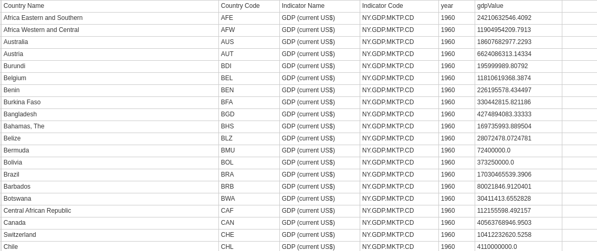
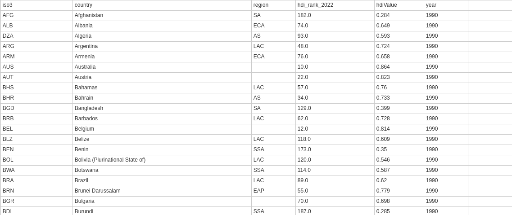
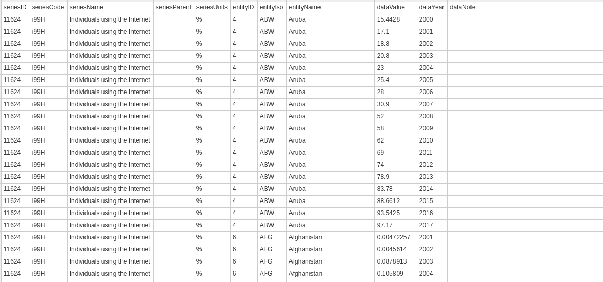
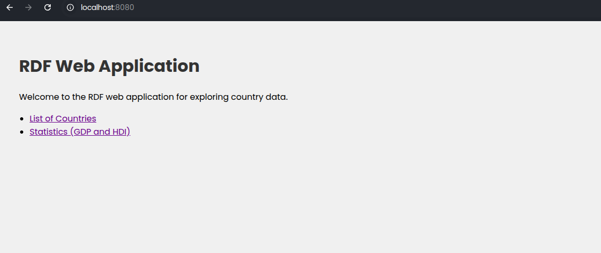
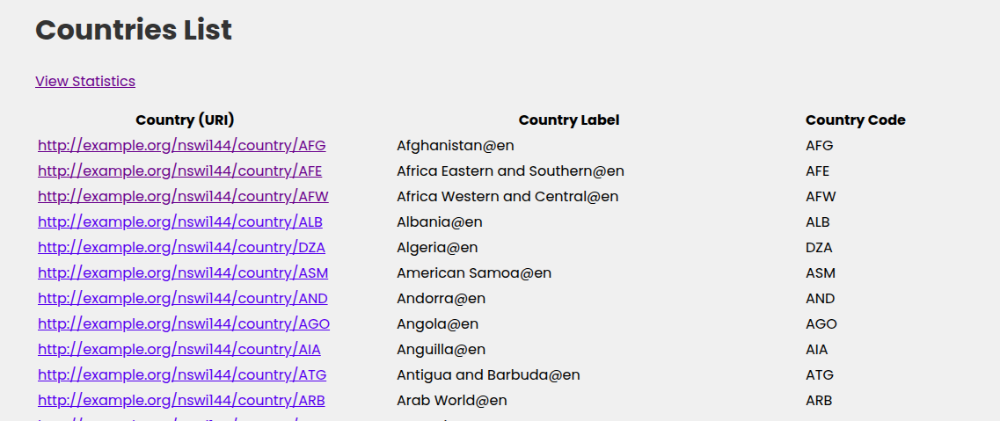
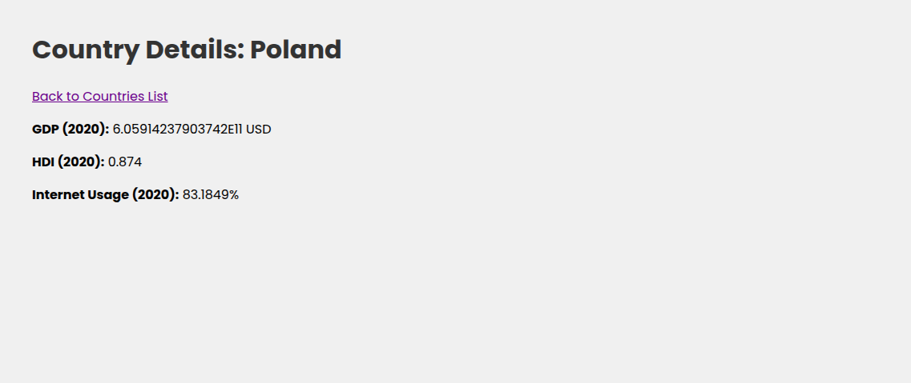
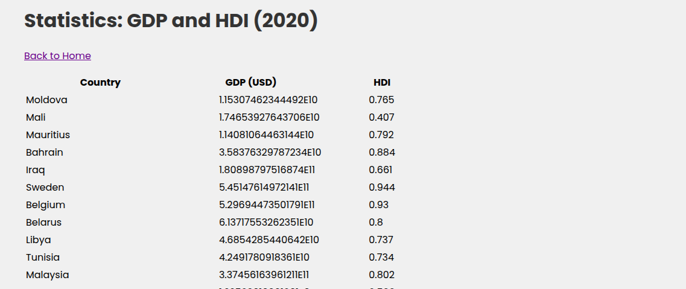

Semestral Project Presentation
Presented by: Betsegaw Gebreyohannes
Date: May 12, 2025
Data Sources
GDP:
World Bank World Development Indicators (
https://data.worldbank.org
)

HDI:
UN Development Programme (
https://hdr.undp.org
)

Internet Usage:
International Telecommunication Union (
https://datahub.itu.int
)

Tools and Triplification Process
TARQL:
Used to transform CSV data into RDF Turtle format with SPARQL CONSTRUCT queries.
Silk:
Employed for link discovery, creating linksets between datasets.
Apache Jena Fuseki:
Triplestore to store and query RDF data.
Apache Jena:
Used in the web application for SPARQL queries and SHACL validation.
Interlinking and New Queries
Country List:
"List all countries with their labels and codes." (Standalone query)
Country Detail:
"What are the GDP, HDI, and Internet Usage values for Poland in 2020?" (Uses internal linking)
Statistics:
"Combine GDP and HDI data for countries in 2019 and 2020."
Describe Observations:
"What are all observations for India across datasets?"
Country Rankings:
"What are the GDP and HDI rankings with a combined score for countries?
High HDI and Internet Usage:
"Which countries have HDI > 0.9 and Internet Usage > 80%
Web Application Screenshots
Home Page

Country List

Country Detail (USA)

Statistics Page
